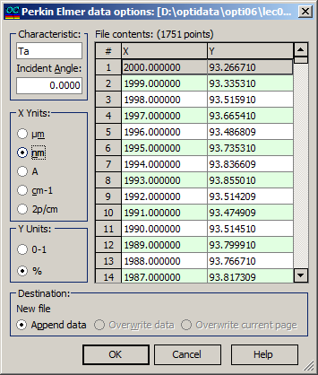

Perkin Elmer options
Quite often, the information concerning the type of measurement data and units being used is not correct in Perkin Elmer binary files. For this reason, it is necessary to use the Perkin Elmer data options dialog box to specify the type of the measured characteristic and units for the X- and Y-columns. For convenience, the data extracted from the current file are displayed at the right part of the dialog box.

The File contents box provides a way to scroll through the content of the selected Perkin Elmer file. In this box:
The X column displays the wavelength grid. You need to select the appropriate wavelength unit in the X-Units field.
The Y column presents one of the six possible spectral characteristics: Ts, Tp, Ta, Rs, Rp, Ra, BRs, BRp, or BRa. You should select the proper characteristic in the Characteristic field.
The range of the selected characteristic (either 0-1 or 0-100%) must be specified in the Y-units field.
Additionally, you can specify the Incident Angle as required.
In the Destination field, the name of the data file being edited and the destination page are indicated. It is possible to append data, to overwrite data in the existing file, or to overwrite the current page only.
When the OK button is pressed, the content of the destination file will be overwritten with the content of the Perkin Elmer file. The number of rows in the Perkin Elmer file may exceed the number of rows in the destination page. In such situations, additional destination pages are automatically added, and extra data are written to these pages.